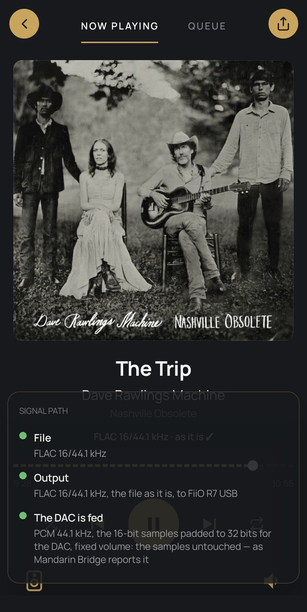

Signal path
Under the album on Now playing: what goes out, and how. A tap shows every step from the file to what the DAC is fed.
- FileThe track as it is stored: its format, depth and rate, such as FLAC 16/44.1 kHz.
- OutputWhat Mandarin sends, and to which room: the file as it is, or converted, upsampled or made DSD, as that device's Output says.
- The DAC is fedWhat the device itself reports feeding its DAC: the format, how the samples sit in the DAC's words, and whether its volume touches them — said as the device's own word.
Reading it
In the picture, the FiiO R7's Bridge reports “PCM 44.1 kHz, the 16-bit samples padded to 32 bits for the DAC, fixed volume: the samples untouched — as Mandarin Bridge reports it”.
- Padded to 32 bits for the DAC: the DAC takes 32-bit words, so each 16-bit sample goes in one with zeros below it; its value is unchanged. Where the device doesn't say the samples go untouched, it reads sent as 32-bit instead.
- Fixed volume: the samples untouched: the volume is the DAC's or the amplifier's, so Mandarin never scales the samples. Otherwise the step says the level they are scaled by.
- The ✓ beside the format shows only when the device itself says the samples reach the DAC untouched in the format sent. Mandarin Bridge and Mandarin's audio engine (a DAC on the server) say it; a WiiM's own API says only the format, so it has none.

Proof is SQ-tool's job
The signal path says only what is known, and whose word it is. Whether every sample reaches the DAC is for a recording of what it was fed to prove: that is SQ-tool.